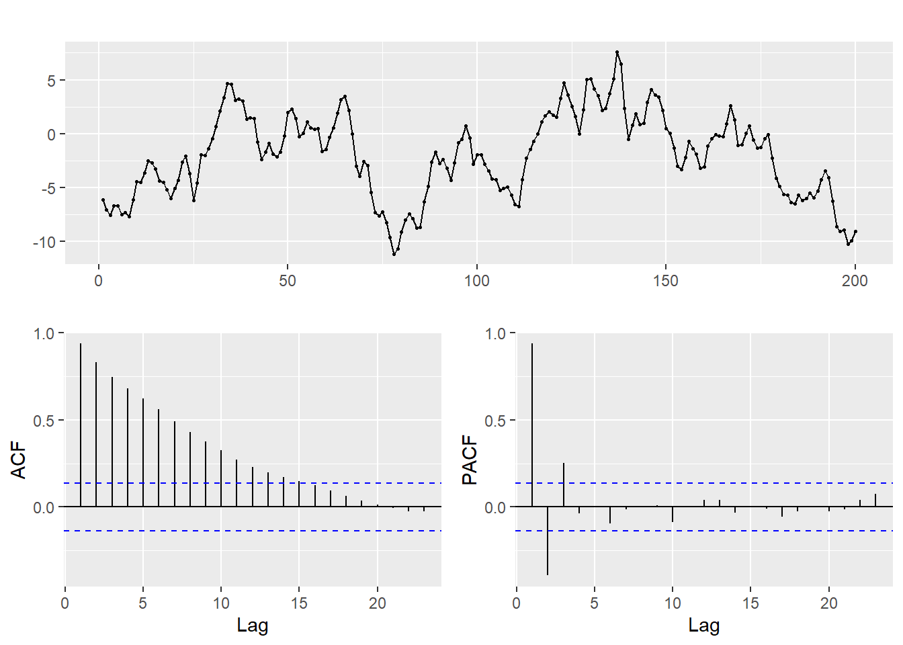
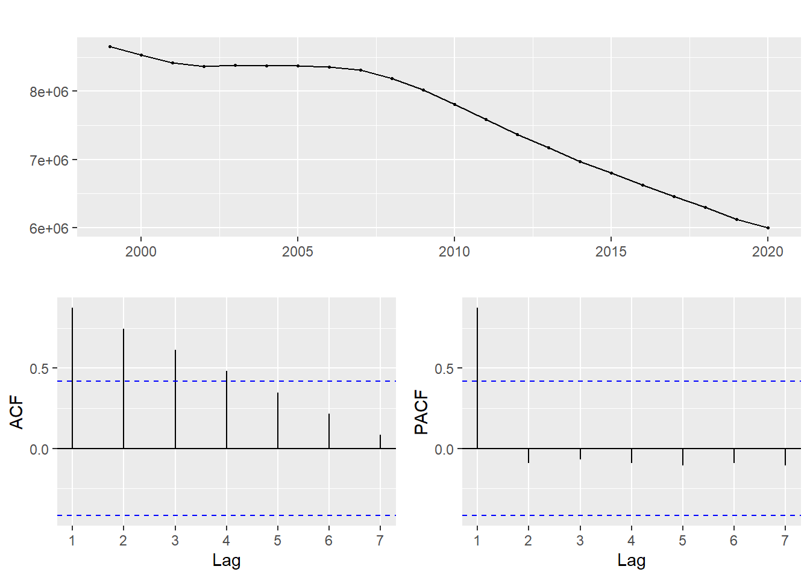
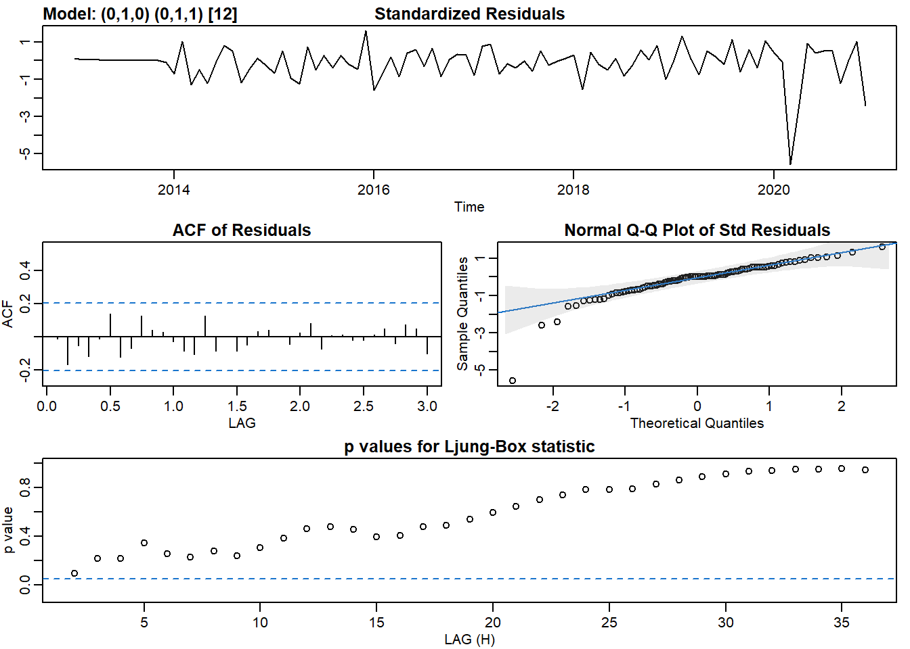
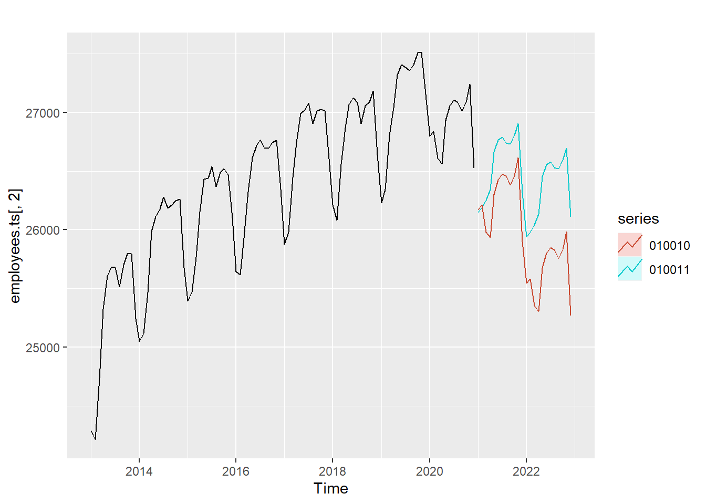

6.4 ARIMA 모델
앞서 설명한 지수평활 모델은 이번 절에서 설명하는 ARIMA 모델과 함께 시계열 예측 모델에서 가장 많이 사용되어온 모델이다. ARIMA는 AutoRegression Integrated Moving Average의 앞글자만 딴 이름이다. 지수 평활 모델은 주어진 데이터에서 추세와 계절성을 계량화한 모델이지만 ARIMA 모델은 이름에서도 나타나듯이 자기상관과 이동평균을 수식화한 모델이다. 사실 ARIMA 모델은 ARMA(AutoRegression Moving Average)을 기반으로 한 모델이지만 ARMA 모델은 정상성 시계열에 한한 모델이기 때문에 비정상성 데이터를 정상화하는 단계를 포함하여 ARIMA 모델로 구현된다.14
ARIMA 모델은 arima(p, d, q)로 표현되는데 p는 AR모델의 차수, d는 비정상성 시계열을 정상성 시계열로 변환하기 위한 차분 차수, q는 이동평균 차수를 의미한다. 결국 ARIMA(p, d, q)모델은 데이터를 정상성 시계열로 만들기 위해 d번 차분한 데이터에 ARMA(p, q)모델을 적용하는 것과 동일하다.
6.4.1 자기회귀모델(AutoRegressive Model)
머신러닝을 공부할 때 가장 먼저 배우는 모델이 선형회귀모델이다. 선형회귀모델은 독립변수와 종속변수를 분리하고 두 변수간의 상관관계를 분석하여 모델링을 한다 . 앞선 장에서 시계열 선형회귀분석을 설명하였는데 이때의 독립변수는 시간이었고 종속변수는 예측을 원하는 변수를 설정하였다.
그러나 AR모델은 독립변수고 종속변수가 모두 하나의 변수를 사용한다는 점에서 일반 회귀모델과 다르다. 과거의 자기자신의 데이터와 현재 데이터간의 상관관계를 분석하여 회귀모델을 세우는 것이 AR 모델이다.
AR(p) 모델은 자기 상관관계가 lag p까지 영향을 미치는 모델이다. AR(1)은 자신의 데이터에 lag 1을 취한 데이터간의 회귀분석 모델이고 AR(2)는 자신의 데이터에 lag 1과 lag 2 데이터 간의 다중 회귀분석 모델이다. 따라서 AR(1) 모델은 회귀계수가 하나이고 AR(2) 모델은 회귀계수가 2개이므로 AR(p) 모델은 회귀계수가 p개 존재하게 된다.
다음의 예는 자기회귀모델을 생성하고 ploting하는 예를 보이고 있다. arima.sim() 함수는 ARIMA 모형에 따른 랜덤 데이터를 생성하는 함수이다.
library(tseries)
set.seed(345)
arima100 <- arima.sim(model = list(order = c(1, 0, 0), ar = 0.9), n = 200) ### ARIMA(1,0,0)에 AR(1)의 회귀계수가 0.9인 데이터 200개 생성
arima100 %>% autoplot(main = 'AR(1) model')kpss.test(arima100) ### kpss 테스트를 통해 생성된 데이터가 정상성인지 테스트 - 0.05보다 크므로 정상성, 차분 불필요## Warning in kpss.test(arima100): p-value greater than printed p-value##
## KPSS Test for Level Stationarity
##
## data: arima100
## KPSS Level = 0.26838, Truncation lag parameter = 4, p-value = 0.1ndiffs(arima100, test = 'kpss') ### 비정상 제거를 위한 차분수 - 0이 나오므로 차분 불필요## [1] 0set.seed(345)
arima110 <- arima.sim(model = list(order = c(1, 1, 0), ar = 0.9), n = 200)
arima110 %>% autoplot(main = 'AR(1), 차분 1 model')
kpss.test(arima110) ### kpss 테스트를 통해 생성된 데이터가 정상성인지 테스트 - 0.05보다 작으므로 정상성, 차분 필요## Warning in kpss.test(arima110): p-value smaller than printed p-value##
## KPSS Test for Level Stationarity
##
## data: arima110
## KPSS Level = 3.2912, Truncation lag parameter = 4, p-value = 0.01ndiffs(arima110, test = 'kpss') ### 비정상성을 제거하기 위해 필요한 차분수## [1] 1ARIMA(1, 0, 0)의 ACF, PACF plot은 다음과 같이 나타난다. acf plot을 보면 자기 상관성이 전반적으로 높고 천천히 감소하는 형태(Tail off)를 보인다. 그리고 pacf plot은 lag 1에서 매우 높지만 2에서부터는 끊어진다.(cut off) ARIMA(1, 1, 0)도 유사한 형태를 나타낸다.
arima100 %>% ggtsdisplay()
6.4.2 이동평균 모델(Moving Average Model)
이동 평균을 가장 많이 볼 수 있는 응용은 주식 plot이다. 주식 plot에서는 3일 이동평균, 5일 이동평균, 10일 이동평균등 다양한 이동평균을 통해 해당 주식 주가의 전반적인 흐름을 파악한다.
보통 우리는 평균을 데이터의 전체합을 데이터의 갯수로 나누어 산출한다. 데이터의 전체적 흐름을 평균이라는 하나의 레벨로 표현하게 되는데 흔히 시계열 데이터에서도 마찬가지로 산출한다. 그러나 이 경우 오래된 데이터 일수록 최근 추세나 경향이 미치는 영향보다는 과거 추세가 강하게 들어가게 되므로 현재 데이터 추세나 경향에 둔감해지는 경향이 있다. 따라서 이동 평균은 최근의 데이터들에 대한 평균치를 산출함으로써 과거보다는 현재에 흐름에 맞는 평균을 산출할 수 있다는 장점이 있다. 이 이동 평균을 연속적으로 ploting 하면 데이터의 추세과 경향을 파악할 수 있다.
이동 평균 모델은 MA(q)로 표현하는데 q는 이동평균을 산출하는 차수를 의미한다. q가 1인 경우는 기준 시점값과 바로 이전값의 평균, 2인경우는 기준 시점값과 이전, 차이전 값과의 평균을 의미한다. 기준 시점값은 시계열 적으로 과거값으로 하나씩 이동할 수 있고 시계열 초기값까지 이동하면 이동평균 산출은 끝난다.
이동 평균 모델에서 하나 주의해야 할점은 이동 평균 모델의 계수를 적용하는 독립 변수가 오차항이라는 점이다. 앞선 자기회귀모델에서는 자기회귀계수를 자기자신의 lag 차수값에 적용하였지만 이동 평균 모델은 이동평균 계수를 오차항에 적용시킨다. (이해가 어렵지만 원리를 알고싶다면 참고문헌15을 참조하라)
set.seed(345)
arima001 <- arima.sim(model = list(order = c(0, 0, 1), ma = 0.9), n = 200) ### ARIMA(1,0,0)에 AR(1)의 회귀계수가 0.9인 데이터 200개 생성
arima001 %>% autoplot(main = 'MA(1) model')arima001 %>% ggtsdisplay()kpss.test(arima001) ### kpss 테스트를 통해 생성된 데이터가 정상성인지 테스트 - 0.05보다 크므로 정상성, 차분 불필요## Warning in kpss.test(arima001): p-value greater than printed p-value##
## KPSS Test for Level Stationarity
##
## data: arima001
## KPSS Level = 0.090581, Truncation lag parameter = 4, p-value = 0.1ndiffs(arima001, test = 'kpss') ### 비정상 제거를 위한 차분수 - 0이 나오므로 차분 불필요## [1] 0set.seed(345)
arima011 <- arima.sim(model = list(order = c(0, 1, 1), ma = 0.9), n = 200)
arima011 %>% autoplot(main = 'MA(1), 차분 1 model')
kpss.test(arima011) ### kpss 테스트를 통해 생성된 데이터가 정상성인지 테스트 - 0.05보다 작으므로 정상성, 차분 필요## Warning in kpss.test(arima011): p-value smaller than printed p-value##
## KPSS Test for Level Stationarity
##
## data: arima011
## KPSS Level = 3.5785, Truncation lag parameter = 4, p-value = 0.01ndiffs(arima011, test = 'kpss') ### 비정상성을 제거하기 위해 필요한 차분수## [1] 1ARIMA(0, 0, 1)의 ACF, PACF plot은 다음과 같이 나타난다. AR(1)모델의 acf는 점차 감소(tail off)하였고 pacf는 1에서 절단(cut off)되었지만 MA(1)모델에서는 acf plot이 1에서 절단(cut off)되고 pacf plot은 +와 -를 반복하지만 전반적으로 감소(tail off)하고 있다.
arima001 %>% ggtsdisplay()
6.4.3 ARIMA 모델 결정
ARIMA 모델을 사용하기 위해서는 p, d, q의 차수를 결정하는 것이 매우 중요하다. 차수를 결정하는 방법은 앞서 설명한 acf, pacf를 보고 판단할 수 있는데 forecast 패키지의 auto.arima() 함수에서는 자동으로 p, d, q의 차수를 결정해주기도 한다.
하지만 ARIMA 모델의 전반적인 동작을 이해하기 위해서는 acf와 pacf를 확인하여 모델을 결정하는 방법을 알아둘 필요가 있다.
앞의 예제에서 AR(1)과 MA(1)의 ACF와 PACF plot을 보았는데 두 경우가 비슷하지만 다른 특성이 있다. AR(1) 모델의 경우는 ACF plot이 점차 감소(tail off)하고 PACF plot의 절단(cut off) 차수가 1이었다. 반면 MA(1)의 경우는 ACF plot의 절단(cut off) 차수가 1이었고 PACF plot이 점차 감소(tail off)하였다.
위의 예제에서 보듯이 AR모델은 ACF plot이 점차 감소하며 PACF plot의 절단 차수가 p값을 의미한다. 반면 MA 모델은 PACF plot이 점차 감소하며 ACF plot의 절단차수가 q값을 의미한다. 이 과정에서 비정상성 시계열을 정상성 시계열로 만들기 위해 차분을 적용하는데 차분의 적용차수가 d값을 의미한다. 만약 AR과 MA가 동시에 나타나는 모델의 경우는 다음의 예에서 보듯이 ACF와 PACF가 모두 점차 감소하는 형태를 보인다.
반면 아래의 예제와 같이 p와 q가 모두 0보다 큰 경우는 ACF와 PACF plot으로 모델을 결정하는 것이 적절하지 않을 수 있다.16 이 경우에는 먼저 차분을 통해 정상성 시계열로 만든 후 ACF와 PACF를 다시 확인해봐야 하고 이 경우에도 적절한 차수를 찾기 어렵다면 여러가지 경우수를 설정하고 AIC, BIC, RMSE 등의 성능 분석 수치를 통해 가장 좋은 모델을 선정해야 한다. 이와 관련된 내용은 다음 장에서 다루겠다.
set.seed(345)
arima101 <- arima.sim(model = list(order = c(1, 0, 1), ar = 0.9, ma = 0.9), n = 200) ### ARIMA(1,0,0)에 AR(1)의 회귀계수가 0.9인 데이터 200개 생성
arima101 %>% autoplot(main = 'AR(1), MA(1) model')arima101 %>% ggtsdisplay()
ARIMA 모델을 학생수 시계열 데이터, 취업자수 시계열 데이터, 코로나 확진자 시계열 데이터에 적용해보면 다음과 같다. 앞서 설명한 바와 같이 forecast 패키지에서는 ARIMA모델을 자동으로 결정해주는 함수인 auto.arima()를 제공한다.
학생수 데이터를 ARIMA 모델에 적용하면 ACF와 PACF로 비교적 확실하게 확인이 가능한 모델을 선정할 수 있다.
auto.arima(students.total.ts[,1]) ### 학생수의 ARIMA모형은 ARIMA(1, 2, 0)으로 선정됨## Series: students.total.ts[, 1]
## ARIMA(1,2,0)
##
## Coefficients:
## ar1
## 0.3861
## s.e. 0.2075
##
## sigma^2 estimated as 1.174e+09: log likelihood=-236.71
## AIC=477.42 AICc=478.12 BIC=479.41students.total.ts[,1] %>% ggtsdisplay() ### ACF가 tail off이고 PACF가 1에서 cut off 이므로 ARMA(1,0)모델
kpss.test(students.total.ts[,1]) ### kpss 테스트를 통해 생성된 데이터가 정상성인지 테스트 - 0.05보다 작으므로 정상성, 차분 필요## Warning in kpss.test(students.total.ts[, 1]): p-value smaller than printed p-value##
## KPSS Test for Level Stationarity
##
## data: students.total.ts[, 1]
## KPSS Level = 0.7939, Truncation lag parameter = 2, p-value = 0.01ndiffs(students.total.ts[,1], test = 'kpss') ### 비정상성을 제거하기 위해 필요한 차분수가 2이므로 최종 모델은 ARIMA(1, 2, 0)## [1] 2auto.arima(students.total.ts[,1]) %>% forecast() %>% autoplot()전체 취업자 수는 계절성을 지니기 때문에 다음의 절에서 설명한다. 교육서비스업 취업자는 다음과 같이 ARIMA 모델이 결정된다.
auto.arima(employees.ts[, 3]) ### 교육서비스업 취업자수의 ARIMA모형은 ARIMA(0, 1, 0)으로 선정됨## Series: employees.ts[, 3]
## ARIMA(0,1,0)
##
## sigma^2 estimated as 508.9: log likelihood=-430.83
## AIC=863.65 AICc=863.7 BIC=866.21kpss.test(employees.ts[, 3]) ### kpss 테스트를 통해 생성된 데이터가 정상성인지 테스트 - 0.05보다 작으므로 비정상성, 차분 필요##
## KPSS Test for Level Stationarity
##
## data: employees.ts[, 3]
## KPSS Level = 0.66909, Truncation lag parameter = 3, p-value = 0.01636ndiffs(employees.ts[, 3], test = 'kpss') ### 비정상성을 제거하기 위해 필요한 차분수가 1## [1] 1diff(employees.ts[, 3]) %>% ggtsdisplay() ### 1차 차분을 해본 결과 ACF, PACF 모두 절단(Cut off)이므로 ARMA(0,0)auto.arima(employees.ts[, 3]) %>% forecast() %>% autoplot() ### ARIMA(0,1,0)은 랜덤 워크 모델
코로나 확진자 데이터의 자동 ARIMA 모형은 (2, 1, 1)로 나타난다. kpss.test와 ndiffs를 통해 차분이 1인 경우 정상성이 되는 것을 확인할 수 있으나 p, q값이 모두 0보다 큰 수이기 때문에 ACF와 PACF plot으로 차수를 결정하는 것이 적절하지 않다.
auto.arima(wide.covid19.by.age.ts[,2]) ### 교육서비스업 취업자수의 ARIMA모형은 ARIMA(0, 1, 0)으로 선정됨## Series: wide.covid19.by.age.ts[, 2]
## ARIMA(2,1,1)
##
## Coefficients:
## ar1 ar2 ma1
## 0.1126 -0.1775 -0.6535
## s.e. 0.0868 0.0688 0.0726
##
## sigma^2 estimated as 26.74: log likelihood=-920.47
## AIC=1848.93 AICc=1849.07 BIC=1863.76kpss.test(wide.covid19.by.age.ts[,2]) ### kpss 테스트를 통해 생성된 데이터가 정상성인지 테스트 - 0.05보다 작으므로 비정상성, 차분 필요## Warning in kpss.test(wide.covid19.by.age.ts[, 2]): p-value smaller than printed p-
## value##
## KPSS Test for Level Stationarity
##
## data: wide.covid19.by.age.ts[, 2]
## KPSS Level = 3.2656, Truncation lag parameter = 5, p-value = 0.01ndiffs(wide.covid19.by.age.ts[,2], test = 'kpss') ### 비정상성을 제거하기 위해 필요한 차분수가 1## [1] 1diff(wide.covid19.by.age.ts[,2]) %>% ggtsdisplay() ### 1차 차분을 해본 결과 ACF, PACF 모두 절단(Cut off)이므로 ARMA(0,0)6.4.4 Seasonal ARIMA 모델
위에서 살펴본 모델은 비계절성 ARIMA 모델이었다. 계절성을 지니는 데이터는 비계절성 ARIMA 모델로는 적절히 모델링이 어렵기 때문에 계절성 ARIMA 모델에 적합시켜야 한다. 계절성 ARIMA는 비계절성 ARIMA의 p, d, q 차수 외에 계절성 차수인 P, D, Q와 관측주기 m을 추가적으로 결정해야 하고 ARIMA(p, d, q)(P, D, Q)m으로 표기한다.
employees.ts[, 2] %>% ggtsdisplay() ### 전체 취업자수는 ACF plot을 볼때 12주기마다 계절성이 있음.
summary(auto.arima(employees.ts[, 2])) ### 학생수의 ARIMA모형은 ARIMA(0, 1, 0)(0, 1, 1)[12]으로 선정됨## Series: employees.ts[, 2]
## ARIMA(0,1,0)(0,1,1)[12]
##
## Coefficients:
## sma1
## -0.4246
## s.e. 0.1648
##
## sigma^2 estimated as 15320: log likelihood=-518.14
## AIC=1040.27 AICc=1040.42 BIC=1045.11
##
## Training set error measures:
## ME RMSE MAE MPE MAPE MASE ACF1
## Training set -17.24831 114.3934 73.75538 -0.06622242 0.2787589 0.2327018 -0.01264952employees.ts.seasadj <- employees.ts[, 2] %>% stl(s.window='periodic') %>% seasadj() ### 계절성을 제외
employees.ts.seasadj %>% ggtsdisplay() ### 계절성을 제외한 데이터는 비정상성 있음diff(employees.ts.seasadj) %>% ggtsdisplay() ### 계절성 제외 데이터를 1차분한 결과는 ARMA(0,0)employees.ts[, 2] %>% diff(lag =12) %>% ggtsdisplay() ### 계절성이 있기 때문에 계절성(12)로 차분 데이터를 구해 계절성을 점검
employees.ts[, 2] %>% diff(lag =12) %>% kpss.test() ###계절성 차분 데이터가 비정상성## Warning in kpss.test(.): p-value smaller than printed p-value##
## KPSS Test for Level Stationarity
##
## data: .
## KPSS Level = 1.0661, Truncation lag parameter = 3, p-value = 0.01employees.ts[, 2] %>% diff(lag =12) %>% ndiffs() ### 계절성 차분 데이터의 차분 수를 구함## [1] 1employees.ts[, 2] %>% diff(lag =12) %>% diff() %>% kpss.test() ### 계절성 차분 데이터의 1차 차분 데이터는 정상성## Warning in kpss.test(.): p-value greater than printed p-value##
## KPSS Test for Level Stationarity
##
## data: .
## KPSS Level = 0.11032, Truncation lag parameter = 3, p-value = 0.1employees.ts[, 2] %>% diff(lag =12) %>% diff() %>% ggtsdisplay() ### 계절성 차분 데이터의 ACF와 PACF를 확인하면 ARMA(0,0)arima010010 <- arima(employees.ts[, 2], order = c(0,1,0), seasonal = c(0,1,0))
arima010011 <- arima(employees.ts[, 2], order = c(0,1,0), seasonal = c(0,1,1))
summary(arima010010) ### 육안으로 구한 ARIMA(0,1,0)(0,1,0)[12]모델의 성능 치수 ##
## Call:
## arima(x = employees.ts[, 2], order = c(0, 1, 0), seasonal = c(0, 1, 0))
##
##
## sigma^2 estimated as 16703: log likelihood = -521.29, aic = 1044.58
##
## Training set error measures:
## ME RMSE MAE MPE MAPE MASE ACF1
## Training set -15.05233 120.5067 78.00443 -0.05780757 0.2945335 0.4009317 -0.01939813summary(arima010011) ### 육안으로 구한 ARIMA(0,1,0)(0,1,0)[12]모델의 성능 치수 ##
## Call:
## arima(x = employees.ts[, 2], order = c(0, 1, 0), seasonal = c(0, 1, 1))
##
## Coefficients:
## sma1
## -0.4246
## s.e. 0.1648
##
## sigma^2 estimated as 15042: log likelihood = -518.14, aic = 1040.27
##
## Training set error measures:
## ME RMSE MAE MPE MAPE MASE ACF1
## Training set -17.24831 114.3934 73.75538 -0.06622242 0.2787589 0.3790922 -0.01264952forecast010010 <- arima010010 %>% forecast()
forecast010011 <- arima010011 %>% forecast()
autoplot(employees.ts[, 2]) +
autolayer(forecast010011, PI = F, series = '010011') +
autolayer(forecast010010, PI = F, series = '010010')
위의 예제에서 육안으로 확인한 ARIMA(0,1,0)(0,1,0)[12]모델의 RMSE값은 120.50과 auto.arima()함수를 통한 ARIMA(0,1,0)(0,1,1)[12]모델의 RMSE값은 114.39이다. 일반적으로 RMSE값이 작은 모델이 성능이 좋은 모델이므로 ARIMA(0,1,0)(0,1,1)모델이 보다 우수한 것으로 볼 수 있다.
이와 같이 육안으로 확인한 ARIMA모델은 불완전하다. 따라서 육안으로 확인하거나 auto.arima 모델의 p, q값의 주위 모델을 반드시 확인하여 성능 수치가 더 우수한 모델을 찾는 과정을 거쳐야 한다.